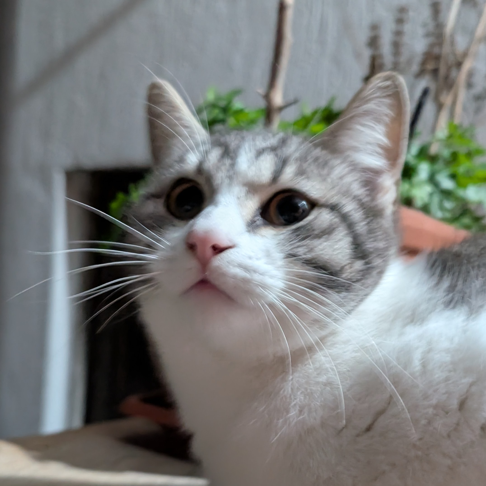

Fabrizio De Santis
PhD Candidate in Information Technology
Department of Engineering and Architecture · University of Parma, Italy
About Me
I'm Fabrizio De Santis, a PhD student in Information Technology at the University of Parma. My current research interests are two-fold: (1) designing neuro-symbolic methods for predictive process monitoring to provide predictions that comply with business rules and logical constraints and to enhance performance in scenarios with limited data; and (2) developing machine-learning methods for predictive analytics in the healthcare domain. I received my M.S. in Computer Engineering and my B.S. in Computer, Electronic, and Telecommunications Engineering from University of Parma, Italy.
Past Experiences
Research
Development of neuro-symbolic approaches for predictive process monitoring for enhancing compliance and performance.
Development of neuro-symbolic methods for the early prediction of sepsis using clinical textual notes.
Research Assistants

Publications
Contact
I'm always open to collaborations and discussions. Feel free to reach out!
Università degli Studi di Parma
I-43124 Parma